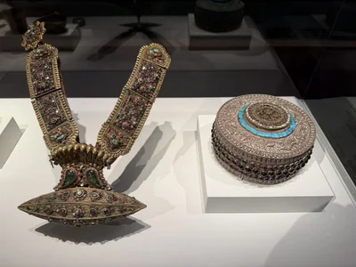

新娘项链塔约
西雅图亚洲艺术博物馆／SAM
10 / CLOSE LOOKING
一顶有明确纪年的法冠，连接山谷中的金属手艺、供养者与主持仪式的人。

纪年1145年的法冠，将小佛、宝石与金刚杵组织成可佩戴的神圣空间。它的名字、年代与用途，使这件器物越过珠宝的范围：戴冠的人，也在仪式中改变自己的身份。 [53]
照片正面的坐佛被蓝色镶嵌环抱，两旁花叶向外舒展。小佛的身体从冠面凸起，背后又有透空的花枝；低处的冠带较为平整，目光沿着它向上，才进入层叠的尊像。金色、深蓝与红色并不平均铺开，颜色聚在佛身周围，使很小的形象仍能成为中心。
馆方记载，法冠由纯铜片锤揲成形，配合錾刻与汞鎏金。锤揲使薄片获得体积，錾刻整理轮廓和细线，鎏金将不同起伏连成温暖的表面。花叶边缘和小佛衣纹适合观察这两种金属加工留下的差别；镶嵌又以颜色标出层次。全冠高27.2厘米，并非实心铸成的一顶金冠。 [53] [54]
金刚阿阇梨（Vajracharya）在尼瓦尔佛教中，是承担密教仪式的在家祭司群体；他们通常有家庭，经传承与灌顶取得主持仪式的资格。这类法冠可见于授予祭司资格的灌顶，以及造像、纪念建筑的开光仪式。它与铃、金刚杵一起，使主持者的身份可以被看见。这是该类法冠的礼仪背景，吉美本件的具体使用场次没有留下可核实的记录。 [55]
吉美将冠上的五佛解释为四方与中央的安排：东方阿閦佛、南方宝生佛、西方阿弥陀佛、北方不空成就佛，以及中央毗卢遮那佛。各佛通过手印辨认。这里的“方向”是曼荼罗的方位秩序；从正面拍摄的照片，只能看到其中一部分。冠顶金刚杵将层层图像收束到一条轴线上。 [53]
按照吉美的解释，这顶冠构成金刚萨埵的曼荼罗，主持者在仪式中认同于金刚萨埵。可以把这种关系理解为借观想和仪轨承担尊神的身份，而非只是戴上一件贵重的饰物。不同法冠的图像安排并不完全相同，其他实例采用的毗卢遮那解释，留在下方资料注中比较。 [53] [54]
馆方指出，下缘冠带背面的尼瓦尔文铭文记录了委托者、相关寺院以及一位兼具宗教身份的金工制作人，并给出1145年的年代。这使一件可以移动的仪式器物，与具体的制作和供养关系相连。现有正面照片看不到这一铭文，馆方网页也未刊出完整释文或这些人的姓名。 [53]
Juramie与Meahl-Blöndal的研究把它作为比较其他无纪年法冠的参照：作者转述吉美学者Gilles Béguin的判断，铭文书体与12世纪相符，所记年代属于原始制作阶段。这样的纪年，让小佛的面容、衣褶、花叶及镶嵌方式获得一个较可靠的时间坐标，还能与雕塑和绘画相互比较；相似的样式却未必都出自同一年。 [54]
镶嵌材料依现场法文展签与吉美现行法文页，列青金石、石榴石、绿松石及有色玻璃；英文页末项作rock crystal（水晶）。目前没有检测报告可进一步解释这一差异。 [07] [53]
现场展签称铭文涉及金工匠、委托僧人与在位国王，并将1145称为祝圣日期；现行官网写委托者、寺院与僧人金工匠。已读研究支持将1145作为原始制作年代，但未刊本件完整铭文。本页保留馆方年代，具体人名、寺名及各身份的对应仍待释文核对。 [53] [54]
Graldi讨论的大都会06.191法冠，采用与毗卢遮那相认同的解释；吉美对MA 4929采用金刚萨埵解释。前者在这里仅用于说明金刚阿阇梨的社会角色与通行仪式。 [55] [53]
吉美记录本件于1982年购入；更早的递藏及原使用寺院，现有公开记录未详。 [53]
塔约是婚礼中的新娘项链，法冠则属于金刚阿阇梨的仪式服饰。两者都围绕佩戴的身体安排图像；它们的社会角色与使用场合各不相同。

西雅图亚洲艺术博物馆／SAM
图片按各自比例展示，实物不等大。
鎏金黄铜嵌多种宝石、珊瑚与珍珠，天鹅绒
照片左侧为塔约项链，右侧圆盒为同柜陈列。
作品基本资料据现场展签及下列馆方记录整理；文字中的观看描述基于这里的现场照片。